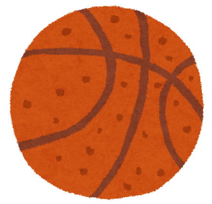

バスケの見どころ！
-

攻守の入れ替わりが激しく、ゲームの展開が早く点がたくさん入るため、ルールが分からなくても見ていて飽きません。
-
近年、日本のバスケのレベルが上がっており、八村塁選手や河村勇輝選手などを有する日本代表は世界の上位層と戦えるくらいまでに実力があり、注目度が高くなっています。
-
また、日本のプロリーグであるBリーグの成長も著しく、全国でアリーナの建設やリーグの拡大により地域に根差した活動をしているため、プロの試合観戦が身近になっています。
-
スラムダンクや黒子のバスケといった人気漫画・アニメの影響もあり、バスケットボールは日本でも幅広い世代に愛されるスポーツとなっています。